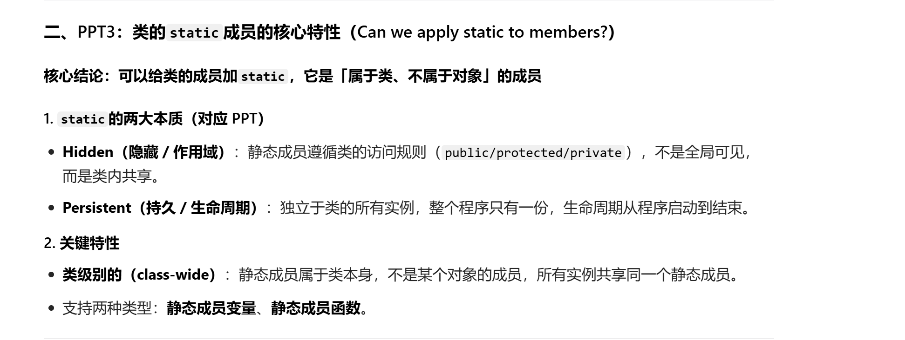
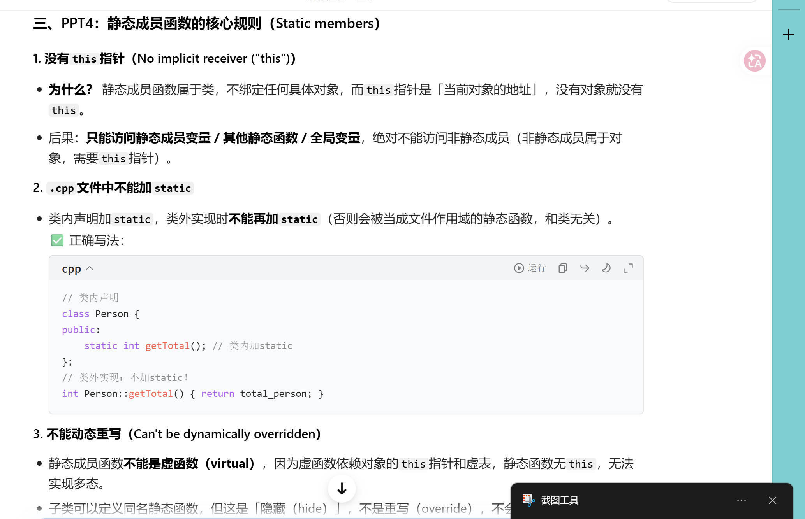
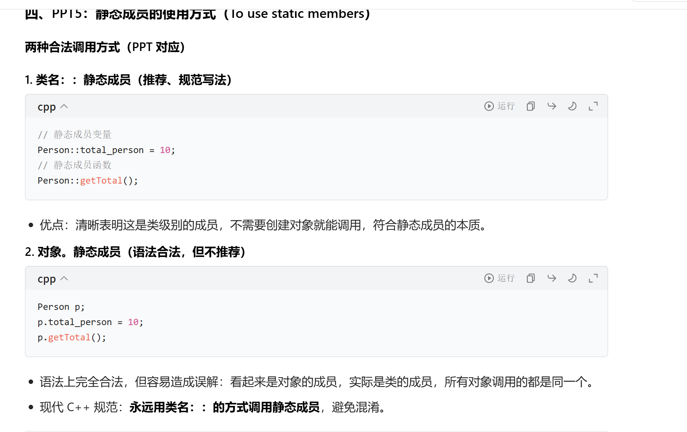
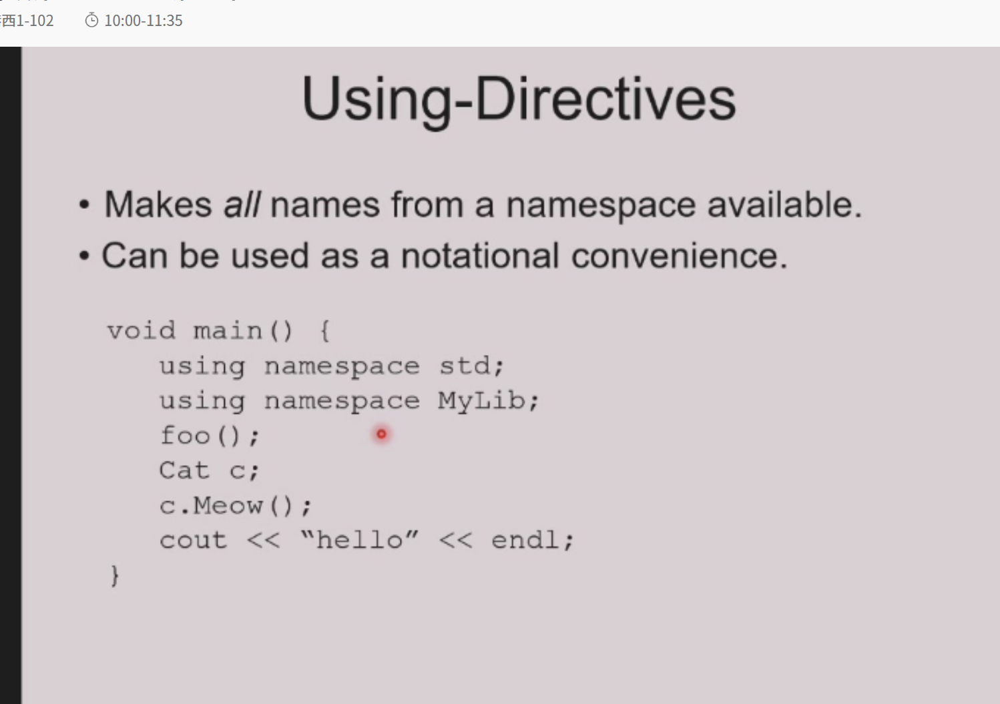

static 关键字¶
static的两大核心本质¶
1. 本质1：静态存储（Static storage / Persistent storage）¶
- 含义：内存只分配一次，地址固定，生命周期从程序启动到程序结束，不会随函数/代码块的执行结束而销毁。
- 对应特性：变量的值会「持久保留」，不会被重复初始化，也不会随栈帧销毁而丢失。
2. 本质2：名字的可见性（Visibility of a name）→ 内部链接（Internal linkage）¶
- 含义：这个变量/函数的名字，仅在当前编译单元（.cpp源文件）内可见，其他.cpp文件无法访问，相当于把作用域限制在当前文件，避免全局命名冲突。
- 对应特性：不会在链接阶段暴露给其他编译单元，解决全局变量/函数的重名问题。
3. 核心使用建议¶
Don't use static except inside functions and classes.
- 翻译：除了在函数内部、类内部，尽量不要使用
static。 - 原因：全局/自由函数用
static实现「内部链接」的写法，在现代C++中已经被弃用（deprecated），推荐用更规范的「匿名命名空间（anonymous namespace）」代替，避免static的多义性。
static的5种具体用法（对应本质）¶
这张表格把static在不同位置的用法、含义、是否弃用，做了完整分类，逐个拆解：
| 用法 | 核心含义 | 对应本质 | 现代C++状态 |
|---|---|---|---|
static 自由函数（全局函数加static） |
内部链接（仅当前.cpp可见） | 本质2：可见性 | 弃用（deprecated） |
static 全局变量 |
内部链接（仅当前.cpp可见）+ 静态存储 | 本质1+本质2 | 弃用（deprecated） |
static 局部变量（函数内的static） |
持久存储（生命周期全程，仅函数内可访问） | 本质1：存储 | 推荐使用 |
static 成员变量（类内的static变量） |
被类的所有实例共享（属于类，不属于对象） | 本质1：存储 | 推荐使用 |
static 成员函数（类内的static函数） |
被所有实例共享，仅能访问静态成员 | 本质1：存储 | 推荐使用 |
逐个用法详解+代码实例¶
1. static 自由函数 / 全局变量（弃用）¶
- 旧写法（C++98/03）：用
static限制全局函数/变量的作用域，仅当前.cpp可见。
// 静态自由函数：仅当前.cpp可调用，其他.cpp无法访问
static void helper() { /* ... */ }
// 静态全局变量：仅当前.cpp可访问，其他.cpp无法访问
static int g_count = 0;
- 现代替代方案（推荐）：用匿名命名空间（
namespace { ... }） 代替，更符合C++的命名空间设计，清晰规范：
- 弃用原因：
static在全局的用法和其他位置的static（如函数内、类内）含义冲突，容易混淆，匿名命名空间更直观。
2. static 局部变量（函数内的static，推荐）¶
- 核心特性：
- 「静态存储」：只初始化一次，生命周期贯穿整个程序，值会持久保留，不会随函数调用结束而销毁。
- 「局部作用域」：只能在当前函数内访问，外部无法访问，完美避免全局变量的污染。
- C++11及以后：初始化是线程安全的（称为「magic statics」），可以安全实现单例模式。
- 代码实例：
void counter() {
static int count = 0; // 仅第一次调用时初始化！
count++;
std::cout << count << std::endl;
}
// 测试：
counter(); // 输出 1（第一次调用，初始化count=0，然后+1）
counter(); // 输出 2（不会重新初始化，count保留上次的值）
counter(); // 输出 3
- 典型应用：函数内的计数器、缓存、单例模式的实例初始化。
3. static 成员变量（类内的static，推荐）¶
- 核心特性：
- 属于类本身，不属于任何一个具体对象，被所有实例共享（整个类只有一份内存）。
- 存储是静态的，生命周期全程，和对象是否创建无关。
- C++17前：必须在类外单独初始化；C++17及以后：可以用
inline static直接在类内初始化。 - 代码实例：
#include <string>
class Person {
public:
// 声明：静态成员变量，属于类，所有实例共享
static int total_person;
std::string name;
Person(std::string n) : name(n) {
total_person++; // 每次创建对象，共享的total+1
}
};
// C++17前：必须在类外初始化（全局作用域）
int Person::total_person = 0;
// C++17及以后：可以直接在类内inline初始化，不需要类外代码
// class Person {
// public:
// inline static int total_person = 0;
// };
// 测试：
Person p1("Alice"), p2("Bob");
std::cout << Person::total_person << std::endl; // 输出 2（两个对象共享同一个total）
std::cout << p1.total_person << std::endl; // 同样输出 2
- 典型应用：统计类的实例数量、全局配置、共享资源。
4. static 成员函数（类内的static，推荐）¶
- 核心特性：
- 属于类本身，被所有实例共享，没有
this指针（因为不绑定具体对象）。 - 只能访问静态成员变量/静态成员函数，不能访问非静态成员（非静态成员属于对象，需要
this指针）。 - 可以直接通过类名调用，不需要创建对象。
- 不能是虚函数（虚函数依赖对象的
this指针和虚表，静态函数无this）。 - 代码实例：
class Person {
private:
static int total_person; // 静态成员变量
std::string name; // 非静态成员变量
public:
// 静态成员函数：只能访问静态成员
static int getTotal() {
return total_person; // ✅ 正确：访问静态成员
// return name; // ❌ 错误：不能访问非静态成员（无this指针）
}
Person(std::string n) : name(n) { total_person++; }
};
int Person::total_person = 0;
// 测试：
Person p("Alice");
std::cout << Person::getTotal() << std::endl; // 输出 1（直接类名调用，不需要对象）
std::cout << p.getTotal() << std::endl; // 也可以通过对象调用，结果一致
- 典型应用：访问类的共享状态、工具类的通用函数（不需要对象的操作）。
三、核心总结&最佳实践¶
1. static的本质记忆法¶
- 函数内/类内的
static：对应「静态存储」，是现代C++推荐的用法，用来实现持久化、共享状态。 - 全局的
static：对应「内部链接」，已经弃用，用匿名命名空间代替。
2. 现代C++最佳实践¶
✅ 推荐使用：
- 函数内的
static局部变量（计数器、单例、缓存） - 类内的
static成员变量/成员函数（共享状态、工具函数）
❌ 避免使用：
- 全局函数/全局变量前加
static（用匿名命名空间代替）
这两张PPT分别讲了C++中两种特殊对象的构造/析构规则：「条件化的静态局部对象」和「全局对象」，是C++对象生命周期的核心知识点，我给你逐张拆解清楚：
两种特殊对象构造¶
第一张PPT：条件化构造（Conditional construction）—— 静态局部对象的延迟初始化¶
核心主题¶
函数内的 static 类对象，只会在第一次执行到它的定义时被构造一次，哪怕它写在 if 条件分支里，也完全遵循这个规则。
1. 代码拆解¶
2. 3个关键特性（PPT逐条对应）¶
-
仅构造一次，且仅当满足条件时构造
my_X只会在第一次调用f()且x > 10时，执行一次构造函数；之后哪怕再调用f()（无论x是否>10），都不会再构造，直接复用同一个对象。 如果第一次调用f()时x ≤ 10，if分支没执行，my_X就永远不会被构造。 -
值会永久保留 构造完成后，
my_X的生命周期贯穿整个程序，状态会一直保留，多次调用f()共享同一个对象，不会被重置。 -
仅当构造过，才会被销毁 如果
my_X从未被构造（比如程序运行中f()从未被x>10调用过），它的析构函数永远不会被调用；只有构造过的对象，才会在程序结束时按顺序析构。
3. 关键补充¶
- 这是C++「静态局部对象延迟初始化」的核心特性，完美实现按需创建、全局存活，是单例模式的标准实现方式。
- C++11及以后，这种条件化的静态局部对象初始化是线程安全的（magic statics），多线程环境下也不会出现重复构造的问题。
第二张PPT：全局对象（Global objects）—— 程序启动前就构造¶
核心主题¶
全局作用域的类对象，构造时机远早于 main() 函数，析构时机在 main() 结束后，是C++中最容易踩坑的对象生命周期场景。
1. 代码拆解¶
#include "X.h"
// 全局作用域的X对象
X global_x(12, 34);
X global_x2(8, 16);
int main() {
// ... 程序逻辑
return 0;
}
2. 构造规则（PPT逐条对应）¶
-
构造在
main()执行之前 全局对象的构造函数，会在程序进入main()之前就被调用，main()不再是程序第一个执行的函数。- 同一源文件内：构造顺序严格按照代码出现的顺序，
global_x先构造，global_x2后构造。 - 不同源文件之间：C++标准不保证全局对象的构造顺序，这是最大的坑！（比如File1.cpp的全局对象依赖File2.cpp的全局对象，可能出现未初始化访问）
- 同一源文件内：构造顺序严格按照代码出现的顺序，
-
析构规则 全局对象的析构函数，会在
main()正常退出 或 调用exit()函数 时执行，析构顺序和构造顺序完全相反：- 同一文件：
global_x2先析构，global_x后析构。 - 不同文件：同样不保证析构顺序。
- 同一文件：
3. 核心风险与最佳实践¶
-
最大坑：全局对象的初始化顺序依赖 如果一个全局对象的构造依赖另一个全局对象，不同文件的构造顺序不确定，会导致「使用未初始化的对象」，引发未定义行为。
-
解决方案：用静态局部对象代替全局对象 把全局对象改成函数内的
static局部对象，利用「延迟初始化+线程安全」的特性，保证依赖顺序：
这样完全避免了全局对象的顺序问题，是现代C++的最佳实践。
- 其他风险：全局对象的构造函数中如果抛出异常，程序会在
main()之前崩溃，难以调试；且全局对象会增加程序启动时间、内存占用。
三、两张PPT的核心对比¶
| 特性 | 条件化静态局部对象 | 全局对象 |
|---|---|---|
| 构造时机 | 第一次执行到定义时（延迟初始化） | main() 执行前（提前初始化） |
| 构造顺序 | 完全可控（按执行顺序） | 同文件按代码顺序，跨文件不保证 |
| 生命周期 | 从第一次构造到程序结束 | 从程序启动到程序结束 |
| 线程安全 | C++11后初始化线程安全 | 无保证，多线程下构造有风险 |
| 依赖问题 | 无（延迟初始化保证依赖顺序） | 跨文件依赖极易出问题 |
| 现代C++推荐度 | ✅ 强烈推荐（单例、按需创建） | ❌ 尽量避免（用静态局部对象代替） |
四、补充关键知识点¶
1. 静态局部对象 vs 全局对象的本质区别¶
- 静态局部对象：延迟初始化，第一次使用时才构造，完美解决全局对象的顺序问题。
- 全局对象：提前初始化，
main()前就构造，顺序不可控，风险极高。
2. 程序结束时的析构顺序¶
- 静态局部对象和全局对象的析构，都在
main()退出后执行，顺序为「构造的逆序」。 - 静态局部对象的构造顺序是「第一次调用的顺序」，因此析构顺序是「最后一次构造的逆序」，和全局对象的代码顺序无关。
一、先给你把这句语法彻底讲明白¶
这是C++中「全局作用域的类对象定义」，完全是标准、合法的语法，一点都不“鬼”，我给你拆成3部分：
X：你之前定义的类名（比如class X { ... }）global_x：这个全局对象的名字(12, 34)：调用X类的带参构造函数，用12和34作为参数，在程序进入main()之前，就完成这个对象的构造。
二、它和普通局部对象的区别（一眼看懂）¶
| 写法 | 作用域 | 构造时机 | 生命周期 |
|---|---|---|---|
X global_x(12, 34);（全局） |
全局/命名空间作用域 | main()执行之前 |
从程序启动到程序结束 |
X local_x(12, 34);（局部） |
函数/代码块内 | 执行到这行代码时 | 函数/代码块执行结束就销毁 |
简单说：全局对象是程序一启动就造好，全程存活；局部对象是用的时候才造，用完就没。
三、第一张PPT：静态初始化依赖问题（Static Initialization Dependency）¶
这张PPT是在讲全局/非局部静态对象的最大坑：跨文件初始化顺序不确定，是C++最经典的“静态初始化顺序惨败（Static Initialization Order Fiasco）”问题。
1. 核心规则拆解¶
- 同文件内：非局部静态对象的构造顺序，严格按照代码出现的顺序，完全可控。
- 跨文件之间：C++标准完全不保证不同源文件（
.cpp）中，非局部静态对象的构造顺序！ - 什么是非局部静态对象？ 就是不在函数内部的静态对象，包括3类：
- 全局/命名空间作用域的对象（比如你问的
X global_x(12, 34);） - 类内声明的
static成员变量 - 文件作用域的
static对象（比如static X s_x(1,2);）
2. 问题场景（踩坑实例）¶
假设你有两个文件：
File1.cpp：定义了全局对象X a(1,2);，它的构造依赖File2.cpp的bFile2.cpp：定义了全局对象Y b(3,4);
编译器可能先构造a，再构造b，导致a构造时用了未初始化的b，直接引发未定义行为（崩溃、脏数据、随机bug），而且这个bug极难调试！
四、第二张PPT：解决方案（Static Initialization Solutions）¶
针对上面的坑，PPT给出了两个核心解决方案：
方案1：直接说“不”—— 彻底避免非局部静态依赖（最推荐）¶
Just say no – avoid non-local static dependencies
- 核心做法：用函数内的静态局部对象，代替全局/非局部静态对象。
- 原理：静态局部对象是延迟初始化，第一次调用函数时才构造，顺序完全可控，彻底解决跨文件顺序问题。
- 标准实现（单例模式的经典写法）：
这样不管哪个文件先初始化，只要调用get_global_x()，就会保证x先构造好，完全避免依赖问题。
方案2：把所有静态对象放到同一个文件，按正确顺序定义¶
Put static object definitions in a single file in correct order.
- 核心做法：把所有有依赖关系的非局部静态对象，全部放到同一个
.cpp文件里，按依赖顺序写代码（被依赖的先写，依赖的后写），利用“同文件顺序可控”的规则，保证构造顺序。 - 缺点：破坏代码模块化，所有全局对象堆在一个文件里，难以维护，仅适合小型项目，大型项目不推荐。
五、补充：为什么不推荐用全局对象？¶
你问的X global_x(12, 34);这种全局对象，有3个致命问题：
- 跨文件初始化顺序不确定：极易出现依赖未初始化对象的bug，调试极难。
- 程序启动慢：
main()之前就构造所有全局对象，拖慢程序启动速度。 - 异常难处理：全局对象构造函数抛异常，程序在
main()之前就崩溃，无法捕获。
现代C++的最佳实践：永远用「函数内静态局部对象」代替全局对象，既保留了全局生命周期，又解决了所有顺序问题，还线程安全（C++11后）。
六、一句话总结¶
X global_x(12, 34); 就是定义一个全局的X类对象，用12和34调用构造函数，程序启动前就造好，但它最大的问题是跨文件初始化顺序不可控，所以现代C++几乎不用，都用静态局部对象代替。



这两张PPT是在讲C++中「命名空间（Namespace）」的核心作用：通过作用域（scoping）管理名字，彻底避免全局作用域的命名冲突（name clash），是C++模块化编程的基础语法，我给你逐张拆解+代码实例，一眼看懂：
命名空间¶
通过作用域控制名字（Controlling names:）¶
核心主题¶
用「类作用域」给名字加“围栏”，让同名符号互不干扰
代码实例拆解¶
class Marbles {
// 在Marbles类内部定义枚举Colors
enum Colors { Blue, Red, Green };
// ... 其他成员
};
class Candy {
// 在Candy类内部也定义同名枚举Colors
enum Colors { Blue, Red, Green };
// ... 其他成员
};
原理说明¶
- 两个类都定义了
Colors枚举，且枚举值都叫Blue/Red/Green，但因为它们分别在Marbles和Candy的类作用域里，完全不会冲突！ - 访问时必须加类名前缀，明确区分：
- 这就是PPT说的「通过作用域控制名字」：把名字放到类的作用域里，相当于给名字加了“姓氏”，同名也不会打架。
全局作用域的命名冲突问题（Avoiding name clashes）¶
核心主题¶
全局作用域的同名函数，会导致严重的链接错误，这是C++早期的大问题
代码实例拆解¶
// old1.h
void f(); // 全局函数f
void g(); // 全局函数g
// old2.h
void f(); // 同名全局函数f！
void g(); // 同名全局函数g！
问题本质¶
- 如果一个
.cpp文件同时#include "old1.h"和"old2.h"，就会出现两个全局作用域的同名函数f()和g()。 - 链接阶段会报「重定义错误（redefinition）」，程序无法编译通过，这就是命名冲突（name clash）。
- 这就是PPT说的「全局作用域的重复名字是大问题」：全局作用域只有一个，同名符号必然冲突。
三、两张PPT的核心关联：引出「命名空间（Namespace）」¶
这两张PPT是命名空间的前置铺垫：
- 第一张展示了「类作用域」解决同名问题的思路：给名字加作用域前缀。
- 第二张展示了「全局作用域」的致命缺陷：无法区分同名符号，必然冲突。
- 接下来的内容，自然会引出命名空间（namespace）：
- 命名空间是「比类更灵活的作用域」，专门用来解决全局作用域的命名冲突。
- 把全局函数/变量放到命名空间里，就像把它们放到不同的“文件夹”，同名也不会冲突。
四、补充：命名空间的标准解决方案（对应PPT的问题）¶
针对第二张PPT的冲突问题，用命名空间彻底解决：
// old1.h
namespace old1 { // 把old1的函数放到命名空间old1里
void f();
void g();
}
// old2.h
namespace old2 { // 把old2的函数放到命名空间old2里
void f();
void g();
}
效果¶
- 两个
f()和g()分别在old1和old2的命名空间里，完全不会冲突！ - 访问时必须加命名空间前缀，明确区分：
- 完美解决了全局作用域的命名冲突，是现代C++模块化编程的标准做法。
五、核心总结¶
| 作用域类型 | 解决冲突的方式 | 适用场景 |
|---|---|---|
| 类作用域 | 类名::成员名 | 类内的枚举、成员函数、成员变量 |
| 命名空间 | 命名空间::名字 | 全局函数、全局变量、类、枚举等 |
| 全局作用域 | 无（唯一） | 仅适合无冲突的全局符号，极易出问题 |
现代C++最佳实践¶
- 永远不要在全局作用域定义同名符号，所有全局函数/类/枚举，都放到命名空间里。
- 类内的枚举/类型，用类作用域区分，避免全局污染。
六、补充：C++11及以后的强类型枚举（解决枚举同名问题）¶
针对第一张PPT的枚举，现代C++推荐用enum class（强类型枚举），进一步避免作用域混淆：
class Marbles {
public:
enum class Colors { Blue, Red, Green }; // 强类型枚举
};
// 访问时必须加类名+枚举名，彻底避免混淆
Marbles::Colors c = Marbles::Colors::Blue;
- 强类型枚举不会隐式转换为整数，类型更安全，作用域更严格。
这5张PPT是C++命名空间（Namespace）的完整语法、定义、实现、使用规则，从「是什么」到「怎么用」，我给你按PPT顺序，用「概念+代码+原理」的方式，彻底讲透每一张的核心：
进一步阐述¶
一、PPT1：命名空间的核心概念（Namespace）¶
核心主题：命名空间是用来「逻辑分组+名字封装」的作用域¶
1. 核心特性¶
- 逻辑分组：把相关的类、函数、变量放到同一个命名空间里（比如
Math命名空间放所有数学函数），结构清晰。 - 作用域等价于类：命名空间是一个独立的作用域，和类作用域一样，能避免全局命名冲突。
- 适用场景：当你只需要「名字封装」，不需要「对象/成员的封装」时，用命名空间比用类更轻量（比如标准库的
std::就是命名空间）。
2. 代码实例¶
- 注释
// Note: No terminating end colon!：命名空间结尾没有分号，和类/结构体不同，这是新手常见坑。
二、PPT2：命名空间的定义（Defining namespaces）¶
核心主题：命名空间要写在头文件（.h）里，声明函数/类¶
代码实例（MyLib.h）¶
// MyLib.h
namespace MyLib {
void foo(); // 命名空间内的函数声明
class Cat { // 命名空间内的类声明
public:
void Meow();
};
}
核心规则¶
- 命名空间的声明必须放在头文件，这样所有
#include "MyLib.h"的源文件都能访问这个命名空间。 - 命名空间可以跨文件、多次定义（相当于把多个文件的内容合并到同一个命名空间），这是类做不到的。
三、PPT3：命名空间函数的实现（Defining namespace functions）¶
核心主题：在源文件（.cpp）里，用作用域解析符::实现命名空间的函数¶
代码实例（MyLib.cpp）¶
// MyLib.cpp
#include "MyLib.h"
#include <iostream>
// 实现MyLib命名空间的foo()函数：必须加MyLib::作用域
void MyLib::foo() {
std::cout << "foo\n";
}
// 实现MyLib::Cat类的Meow()方法：作用域要写全MyLib::Cat::
void MyLib::Cat::Meow() {
std::cout << "meow\n";
}
核心规则¶
- 类外实现命名空间的函数，必须用
命名空间::函数名的作用域语法，告诉编译器这个函数属于哪个命名空间。 - 类内的成员函数，作用域要写全：
命名空间::类名::函数名（MyLib::Cat::Meow()）。
四、PPT4：命名空间的使用（Using names from a namespace）¶
核心主题：用作用域解析符::访问命名空间的名字，最规范、最安全¶
代码实例（main.cpp）¶
#include "MyLib.h"
int main() {
// 必须加MyLib::前缀，明确是MyLib命名空间的foo()
MyLib::foo();
// 必须加MyLib::前缀，明确是MyLib命名空间的Cat类
MyLib::Cat c;
c.Meow();
return 0;
}
优缺点¶
- ✅ 优点：绝对安全、无歧义，永远不会出现命名冲突，代码可读性强。
- ❌ 缺点：每次都要写
MyLib::，代码冗余、繁琐（tedious and distracting）。
五、PPT5：using声明（Using-Declarations）¶
核心主题：用using声明给名字起「局部别名」，消除冗余的作用域前缀¶
代码实例（main.cpp）¶
#include "MyLib.h"
int main() {
// using声明：把MyLib::foo引入当前作用域，起别名foo
using MyLib::foo;
// 把MyLib::Cat引入当前作用域，起别名Cat
using MyLib::Cat;
// 直接用foo()，不用写MyLib::
foo();
// 直接用Cat，不用写MyLib::
Cat c;
c.Meow();
return 0;
}
核心特性¶
- 局部别名：
using声明只在当前作用域有效（比如main()函数内），不会污染全局作用域。 - 明确来源：在
using这一行，就明确了foo来自MyLib，代码可读性好。 - 消除冗余：不用每次都写
MyLib::，代码简洁，同时避免了using namespace std;这种全局using的风险。
六、完整总结：命名空间的核心知识点¶
1. 命名空间的本质¶
- 是一个独立的作用域，用来给全局符号（函数、类、变量）分组，彻底避免全局命名冲突。
- 比类更轻量，只做名字封装，不做对象/成员的封装。
2. 完整开发流程（对应PPT）¶
- 头文件（.h）：定义命名空间，声明函数/类。
- 源文件（.cpp）：用
命名空间::作用域实现函数。 - 使用（main.cpp）：
- 规范写法：
命名空间::名字（安全无歧义） - 简洁写法：
using 命名空间::名字（局部别名，消除冗余）
- 规范写法：
3. 关键避坑指南¶
- ❌ 不要用
using namespace MyLib;（全局using）：会把命名空间所有名字引入全局，重新引发命名冲突，违背命名空间的初衷。 - ✅ 永远用
using 命名空间::名字（局部using声明），只引入需要的名字，安全简洁。 - 命名空间结尾没有分号，和类不同。
七、补充：标准库的std命名空间（对应PPT的MyLib）¶
你天天用的std::cout、std::string，就是标准库的std命名空间，完全遵循这套规则：
// 规范写法
std::cout << "hello" << std::endl;
// using声明写法（推荐）
using std::cout;
using std::endl;
cout << "hello" << endl;
// 不推荐：using namespace std; 全局using，污染全局作用域

命名空间进阶¶
一、PPT1：命名空间别名（Namespace aliases）¶
核心主题：给长命名空间起短别名，解决「太长难用、太短冲突」的问题¶
1. 核心痛点¶
- 命名空间名太短：容易全局冲突（比如
namespace Math可能和其他库重名） - 命名空间名太长：每次调用都要写一长串，代码繁琐
2. 解决方案：命名空间别名¶
// 定义一个超长命名空间
namespace supercalifragilistic {
void f();
}
// 给它起别名short
namespace short = supercalifragilistic;
// 用别名直接调用，等价于supercalifragilistic::f()
short::f();
3. 额外用法：库版本管理¶
可以用别名切换不同版本的库，比如：
namespace MyLib_v2 { /* ... */ }
namespace MyLib_v3 { /* ... */ }
// 用别名指向当前使用的版本
namespace MyLib = MyLib_v3;
// 代码里统一用MyLib::，切换版本只改这一行
MyLib::foo();
二、PPT2-3：命名空间组合（Namespace composition）¶
核心主题：把多个命名空间的内容，合并到一个新命名空间里，同时解决命名冲突¶
1. 基础场景（PPT2）¶
两个命名空间有同名函数y()：
2. 组合+解决冲突（PPT3）¶
namespace mine {
// 把first和second的所有名字引入mine（using namespace 指令）
using namespace first;
using namespace second;
// 用using声明，明确指定y()用first的，解决冲突！
using first::y();
// 自己新增的函数
void mystuff();
}
3. 核心规则¶
- 显式定义的函数优先：如果
mine里自己定义了y()，会覆盖引入的first::y()，不会冲突 - using声明解决冲突：当两个命名空间有同名符号时，用
using 命名空间::名字明确指定用哪个
三、PPT4：命名空间选择（Namespace selection）¶
核心主题：只引入需要的名字，而不是整个命名空间，更安全、更轻量¶
代码实例¶
namespace orig {
class Cat { /* ... */ };
void foo();
void bar();
}
namespace mine {
// 只引入orig::Cat，不引入其他函数
using orig::Cat;
// 自己的函数
void x();
void y();
}
核心优势¶
- 只选需要的名字，不会污染命名空间，避免命名冲突
- 原命名空间
orig的修改，会自动同步到mine（比如orig::Cat加了新方法，mine::Cat自动拥有） - 比
using namespace orig;（引入整个命名空间）安全得多
四、PPT5：命名空间是开放的（Namespaces are open）¶
核心主题：命名空间可以跨文件、多次定义，内容自动合并¶
代码实例¶
// header1.h
namespace X {
void f(); // X里有f()
}
// header2.h
namespace X {
void g(); // 给同一个X命名空间加g()，X现在有f()和g()
}
核心特性¶
- 命名空间是「开放的」：多次声明同一个命名空间，相当于把内容合并到一起
- 可以跨文件分布：把同一个命名空间的内容，拆分到多个头文件/源文件里，模块化更灵活
- 这是类做不到的：类不能跨文件多次定义，只能一次定义完整
五、PPT6：类继承中的using声明（using function）¶
核心主题：子类用using声明，把父类的函数引入子类作用域，解决「名字隐藏」问题¶
1. 问题场景¶
子类定义了同名函数f(int)，会隐藏（hide）父类的f()，导致子类无法调用父类的无参f()：
class Base {
public:
void f() {} // 父类无参f()
};
class Child : public Base {
public:
void f(int i) {} // 子类带参f()，隐藏了父类的f()
};
Child c;
c.f(); // ❌ 报错！找不到无参f()，被隐藏了
2. 解决方案：using声明¶
class Child : public Base {
public:
// 用using声明，把父类的Base::f()引入子类作用域
using Base::f;
void f(int i) {} // 子类带参f()
};
Child c;
c.f(); // ✅ 正确！调用父类的无参f()
c.f(10); // ✅ 正确！调用子类的带参f()
3. 核心原理¶
using Base::f把父类的f()引入子类作用域，和子类的f(int)形成函数重载，而不是隐藏- 完美解决了「子类同名函数隐藏父类函数」的问题，是C++继承中的常用技巧
六、完整总结：命名空间进阶+类using声明¶
1. 命名空间进阶特性¶
| 特性 | 核心作用 |
|---|---|
| 命名空间别名 | 给长命名空间起短名，简化调用 |
| 命名空间组合 | 合并多个命名空间，用using声明解决冲突 |
| 命名空间选择 | 只引入需要的名字，避免全局污染 |
| 开放命名空间 | 跨文件多次定义，内容自动合并 |
2. 类继承中的using声明¶
- 解决子类同名函数隐藏父类函数的问题
- 把父类函数引入子类作用域，实现函数重载
- 语法：
using 父类::函数名
七、补充最佳实践¶
✅ 永远用这些用法：
- 命名空间别名：简化长命名空间调用
- 命名空间选择：只引入需要的名字，不用
using namespace全局引入 - 类继承中的using声明：解决名字隐藏，实现重载
❌ 避免的用法：
using namespace 命名空间（全局引入）：重新引发命名冲突，违背命名空间的初衷